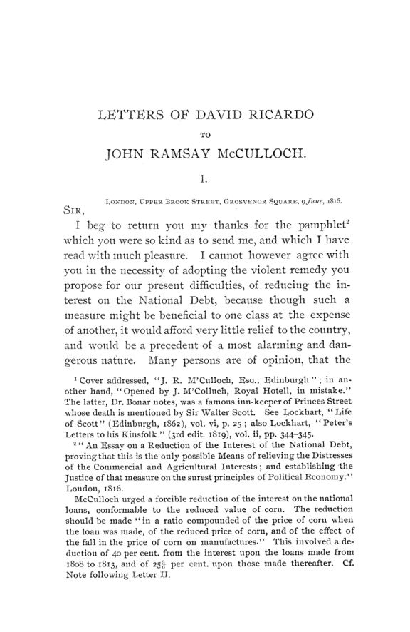

Hollander, 1895: Ricardo por carta, da moeda às máquinas
Leitura: 9 min
Em 1895, J. H. Hollander publicou pela primeira vez as cartas de David Ricardo a J. R. McCulloch: dívida pública, padrão-ouro, renda da terra, máquinas e a busca de uma medida de valor.


A primeira carta da coleção foi aberta pela pessoa errada. Enviada de Londres em junho de 1816 a J. R. McCulloch, em Edimburgo, traz no envelope, em outra letra, a anotação de que fora aberta por engano por um J. M'Culloch, do Royal Hotel. Era, segundo nota do editor, um conhecido hoteleiro da Princes Street. Dentro, David Ricardo agradecia o folheto do jovem economista escocês e recusava, com educação e firmeza, o “remédio violento” que ele propunha para a crise do pós-guerra.
A carta abre Letters of David Ricardo to John Ramsay McCulloch, 1816–1823, publicado nas Publications of the American Economic Association em setembro e novembro de 1895, com introdução e notas de J. H. Hollander, da Johns Hopkins University. São 45 peças, quase todas de Ricardo, impressas pela primeira vez a partir dos originais que Hugh G. Reid, antigo secretário de McCulloch, doou ao British Museum em abril de 1894.
Quem eram os correspondentes?
Um mestre e um discípulo que só se conheceram pessoalmente no fim. McCulloch visitou Londres e a propriedade de Ricardo em Gatcomb Park na primavera de 1823; até então, toda a relação foi epistolar e girou em torno da atuação de Ricardo na Câmara dos Comuns e dos artigos de McCulloch na Edinburgh Review e no Scotsman. Em 1818, ao resenhar os Principles of Political Economy and Taxation, McCulloch escrevera que Ricardo fizera mais pela economia política do que qualquer outro autor, com a possível exceção de Adam Smith.
O que Ricardo pensava da dívida e da moeda?
O folheto de 1816 propunha reduzir à força os juros da dívida nacional na proporção da queda do preço do trigo. Ricardo achava que a medida beneficiaria uma classe à custa de outra, aliviaria pouco o país e abriria um precedente alarmante. Se fosse sábio legislar a cada mudança no valor da moeda, argumentava, o Estado deveria ter começado muito antes, quando os credores perdiam com a desvalorização. Ninguém nunca os socorreu.
“todo coração se compadece dos que perdem com a sua alta” (“every heart sympathizes with those who are losers by its rise”)
A frase completa o raciocínio: quem perde com a queda do valor do dinheiro nunca recebe alívio, mas a alta comove a todos. Para Ricardo, boa parte da crise vinha da queda dos preços agrícolas, que teria ocorrido mesmo com moeda metálica. Recomendava cortar gastos, subir impostos até cobrir a despesa e não tocar no fundo de amortização, que considerava um contrato com os credores.
Na moeda, o tema era a volta à conversibilidade, feita em 1819 com base no plano de Ricardo de notas conversíveis em barras de ouro. Em janeiro daquele ano, ele disse achar de pouca importância a escolha do metal, mas preferiu o ouro: esperava-se que máquinas modernas nas minas baixassem bastante o valor da prata, tornando-a imprópria como padrão. Hollander resume a avaliação posterior de Ricardo: a retomada teria reduzido os preços em talvez 5%, e as compras desnecessárias de ouro pelo Banco da Inglaterra levaram isso a cerca de 10%.
Como Ricardo explicava a renda da terra?
Na mesma carta de 1819, Ricardo comenta as notas de Jean-Baptiste Say à tradução francesa dos Principles. Say tentava mostrar que não existe terra que não pague renda e julgava assim tê-lo refutado. Ricardo responde que Say ignorou o ponto em que ele mais insistia: em todo país há uma parcela de capital aplicada em terra já cultivada pela qual não se paga renda adicional.
Daí a posição sobre as leis do trigo, as Corn Laws. Ricardo propunha reduzi-las gradualmente até sobrar apenas um direito compensatório equivalente aos encargos próprios da agricultura. Em julho de 1821 deu a medida: chamaria de livre o comércio se o trigo pagasse um direito permanente de oito xelins por quarter. Contra Thomas Tooke, estava certo de que, com os portos abertos, o país seria importador. E não poupou os depoentes da comissão agrícola: agricultores, escreveu, são péssimos legisladores.
Por que Ricardo mudou de ideia sobre as máquinas?
Em março de 1820, Ricardo escrevia que o emprego de máquinas nunca diminuía a demanda por trabalho. Hollander anota que seu pensamento estava à beira de uma mudança radical. Em abril de 1821, já com a terceira edição dos Principles a caminho de Edimburgo, Ricardo avisou que acrescentara um capítulo novo, “On Machinery”. McCulloch reagiu, nas palavras do editor, com consternação e indignação: escreveu que não esperava ver Ricardo apertar a mão de Malthus e entregar tudo.
“o uso delas antes tende à diminuição do produto bruto” (“the use of it rather tends to the diminution of the gross produce”)
Na resposta, de junho de 1821, Ricardo resume a mudança: antes achava que as máquinas permitiam aumentar todo ano o produto bruto do país; agora achava o contrário. E separa sua tese da de Malthus. Para Malthus, a máquina produzia tanto que faltava demanda. Para Ricardo, a máquina podia reduzir a quantidade produzida; a vontade de consumir continuava ilimitada, mas faltariam meios de compra. O ponto central era a conversão de capital circulante, que paga salários, em capital fixo, que não paga.
Ricardo admite que, se a máquina durasse um único ano, não haveria queda na demanda por trabalho; o efeito aparece quando ela dura dez. Em 30 de junho de 1821 leva o argumento ao limite: se as máquinas pudessem fazer todo o trabalho, só teria direito a consumir quem pudesse comprar ou alugar uma máquina. Segundo Hollander, McCulloch acabou cedendo em parte e, em 1825, chamava o caso de possível, mas muito improvável.
Existe uma medida perfeita de valor?
É o assunto das últimas cartas. Em março de 1822, ao ler as aulas manuscritas de McCulloch, Ricardo observa que o discípulo ia além do mestre ao medir o valor apenas pela quantidade de trabalho. Ele próprio admitia uma segunda causa: mil tijolos podiam mudar de valor em relação a uma musselina feita com máquinas caras só porque os salários subiam ou caíam.
Em agosto de 1823 confessou não achar saída do labirinto. Não conseguia superar a dificuldade do vinho guardado na adega por três ou quatro anos, nem a do carvalho que recebeu dois xelins de trabalho e passou a valer £ 100. McCulloch respondia que o lucro acumulado era trabalho acumulado; Ricardo achava o artifício forçado.
“temos escolha apenas entre medidas imperfeitas” (“we have a choice only amongst imperfect measures”)
Na natureza não existe medida perfeita, escreve Ricardo, porque o valor se compõe de salários e lucros em proporções infinitas. A medida de Malthus, mercadoria feita só com trabalho, fica num extremo; velhos carvalhos ficam no outro. Ricardo escolhe uma mercadoria intermediária, feita com trabalho e capital durante certo tempo, por ser o caso da maioria dos bens.
Como termina a correspondência?
Com uma carta de James Mill, escrita da East India House em 19 de setembro de 1823. Mill conta que a doença começou com uma dor de ouvido tratada como resfriado e terminou em delírio e torpor. Diz que ele e McCulloch eram os dois únicos discípulos genuínos de Ricardo e propõe um curso de economia política com seu nome. As primeiras Ricardo Memorial Lectures, anota Hollander, foram dadas pelo próprio McCulloch, em Londres.
Na minha leitura
O que mais me chama a atenção nestas cartas é a disposição de Ricardo para mudar de ideia em público sobre o tema mais sensível do seu tempo. Ele havia defendido que as máquinas nunca reduziam a demanda por trabalho, foi convencido do contrário pelo próprio raciocínio e publicou a correção, sabendo que daria munição aos críticos. O argumento sobrevive porque é preciso: a perda não vem da técnica em si, mas da conversão de capital que paga salários em capital que não paga.
A discussão sobre a medida de valor ensina outra coisa. Ricardo queria um padrão invariável e concluiu que ele não existe; sobra escolher o menos imperfeito e saber em que direção ele erra. A lição vale para qualquer índice de preços ou padrão monetário. O mesmo realismo aparece na dívida: recusar o calote disfarçado, porque nenhuma fórmula separa credores antigos de novos sem cometer injustiça.
Glossário
- renda diferencial
- pagamento pelo uso da terra que nasce da diferença de rendimento entre terras ou entre doses de capital aplicadas na mesma terra.
- Corn Laws
- leis inglesas que restringiam a importação de trigo para sustentar o preço interno.
- direito compensatório
- tarifa que apenas iguala um encargo interno específico, sem dar proteção adicional ao produtor.
- retomada dos pagamentos em espécie
- volta à conversibilidade das notas do Banco da Inglaterra em ouro, suspensa desde 1797.
- fundo de amortização
- reserva destinada a resgatar a dívida pública ao longo do tempo.
- capital fixo e circulante
- capital empatado em máquinas e edifícios, de um lado; capital gasto a cada ciclo, sobretudo em salários, de outro.
- produto bruto
- total produzido no ano, antes de descontar o que repõe o capital; para Ricardo, dele dependia o sustento dos trabalhadores.
- medida invariável de valor
- mercadoria hipotética cujo valor não mudasse, servindo de régua para os demais preços.
Fontes
- [Letters of David Ricardo to John Ramsay McCulloch]: Introduction (pp. xi–xxii). JSTOR · Internet Archive (PDF)
- Letters of David Ricardo to John Ramsay McCulloch (pp. 1–182). JSTOR · Internet Archive (PDF)
- Sumário da edição no JSTOR: Publications of the American Economic Association, vol. 10, nº 5/6.
Documento em domínio público (EUA, publicado antes de 1931), via JSTOR Early Journal Content e Internet Archive. Resumo e comentário do autor deste site, sem afiliação com a American Economic Association. Encontrou um erro? Escreva: a correção é publicada no próprio texto, com data.
← Nº 47 · Cummings, 1895: os pobres que os estados devolviam uns aos outros